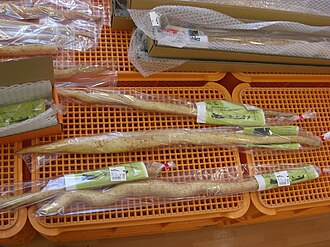

やまのいも（山芋）の生産量 都道府県ランキング
全10県の順位と、とれた量
やまのいもが日本でいちばん多くとれるのは北海道です。7万900 tで、全国（14万8,400 t）の48%を占めます。

| 順位 | 都道府県 | 収穫量 | 全国に占める割合 |
|---|---|---|---|
| 1位 | 北海道 | 7万900 t | 48% |
| 2位 | 青森県 | 4万4,700 t | 30% |
| 3位 | 長野県 | 6,430 t | 4.3% |
| 4位 | 千葉県 | 5,310 t | 3.6% |
| 5位 | 群馬県 | 3,900 t | 2.6% |
| 6位 | 岩手県 | 3,250 t | 2.2% |
| 7位 | 茨城県 | 2,570 t | 1.7% |
| 8位 | 鳥取県 | 1,260 t | 0.8% |
| 9位 | 秋田県 | 693 t | 0.5% |
| 10位 | 山梨県 | 517 t | 0.3% |
やまのいもの生産量の推移（令和2年産〜令和6年産）
全国の収穫量は、令和2年産の17万500 tから令和6年産の14万8,400 tへ、13%減りました。この間、1位はずっと北海道です。
| 年 | 全国 | 1位 | 2位 | 3位 |
|---|---|---|---|---|
| 令和6年産 | 14万8,400 t | 北海道7万900 t | 青森県4万4,700 t | 長野県6,430 t |
| 令和5年産 | 16万3,700 t | 北海道8万800 t | 青森県4万9,200 t | 長野県6,340 t |
| 令和4年産 | 15万7,200 t | 北海道7万7,500 t | 青森県4万5,500 t | 長野県6,440 t |
| 令和3年産 | 17万7,400 t | 北海道8万1,600 t | 青森県5万6,700 t | 長野県6,480 t |
| 令和2年産 | 17万500 t | 北海道7万3,400 t | 青森県5万7,900 t | 長野県6,620 t |
この数字について
- 分類：ヤマノイモ科
- 全国の収穫量：14万8,400 t
- この数字が表すもの：収穫量（畑や田でとれた重さ）
- 調査：作物統計調査 作況調査（野菜） 令和6年産
- 10県分を調査（調査していない県は順位に入りません）
やまのいもの生産量について、よくある質問
- やまのいもの生産量が日本一の都道府県はどこですか？
- 北海道です。作物統計調査 作況調査（野菜）（令和6年産）で7万900 tでした。
- やまのいもの生産量ランキング2位・3位はどこですか？
- 2位は青森県（4万4,700 t）、3位は長野県（6,430 t）です。
- やまのいもの生産量ランキング4位・5位はどこですか？
- 4位は千葉県（5,310 t）、5位は群馬県（3,900 t）です。やまのいもの全10県の順位は上の表のとおりです。
- やまのいもの全国の生産量はどれくらいですか？
- 14万8,400 t（令和6年産）です。